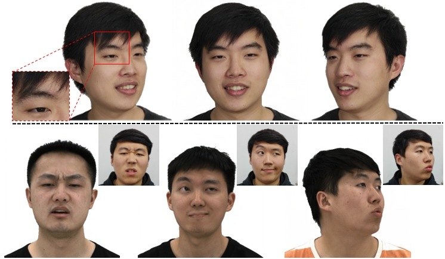

Lizhen Wang (王立祯)
Postdoc at Tsinghua University (清华大学博士后)
About me
I am a postdoc at Department of Automation since 2023, Tsinghua University, China. I am advised by Yebin Liu in Institute for Brain and Cognitive Sciences. My research interests lie in 3D body reconstruction, 3D face reconstruction, 3D face tracking and StyleGAN-based or NeRF-based facial avatar.
Real-time tracking (single RGB camera).
Real-time portrait avatar.
Concact
E-mail: wanglz14@126.com
Wechat: wanglz14
期望求职方向: 数字人、AIGC、NeRF/Gaussian相关、面捕/人脸生成
Education

Aug. 2018 - Jun. 2023, Department of Automation, Tsinghua University,
Ph.D in Yebin Liu's lab.
Aug. 2014 - Jul. 2018, Mathematics and Physics, Tsinghua University,
Bachelor of Science.
EXPERIENCES
Jun. 2023 - Present, Department of Automation, Tsinghua University,
Postdoc in Yebin Liu's lab.
May. 2020 - Jul. 2021 & Jul. 2022 - Sep. 2022, Alipay Business Line, Ant Group,
Research Internship.
Jul. 2017 - Sep. 2017, Graphics & AI Lab, The University of Texas at Austin,
Summer Internship.
Publications
|
Animatable Gaussians: Learning Pose-dependent Gaussian Maps for High-fidelity Human Avatar Modeling
|
|
|
Gaussian Head Avatar: Ultra High-fidelity Head Avatar via Dynamic Gaussians
|
|
|
DreamCraft3D: Hierarchical 3D Generation with Bootstrapped Diffusion Prior
|
|
|  |
HAvatar: High-fidelity Head Avatar via Facial Model Conditioned Neural Radiance Field
|
|
StyleAvatar: Real-time Photo-realistic Portrait Avatar from a Single Video
|
|
|
AvatarMAV: Fast 3D Head Avatar Reconstruction Using Motion-Aware Neural Voxels
|
|
|
LatentAvatar: Learning Latent Expression Code for Expressive Neural Head Avatar
|
|
|
Next3D: Generative Neural Texture Rasterization for 3D-Aware Head Avatars
|
|

|
FaceVerse: a Fine-grained and Detail-controllable 3D Face Morphable Model from a Hybrid Dataset
|
|
IDE-3D: Interactive Disentangled Editing for High-Resolution 3D-aware Portrait Synthesis
|
|

|
NormalGAN: Learning Detailed 3D Human from a Single RGB-D Image
|

|
DDRNet: Depth Map Denoising and Refinement for Consumer Depth Cameras Using Cascaded CNNs
|
Teaching
- TA, Data Structure(Since Autumn 2018)